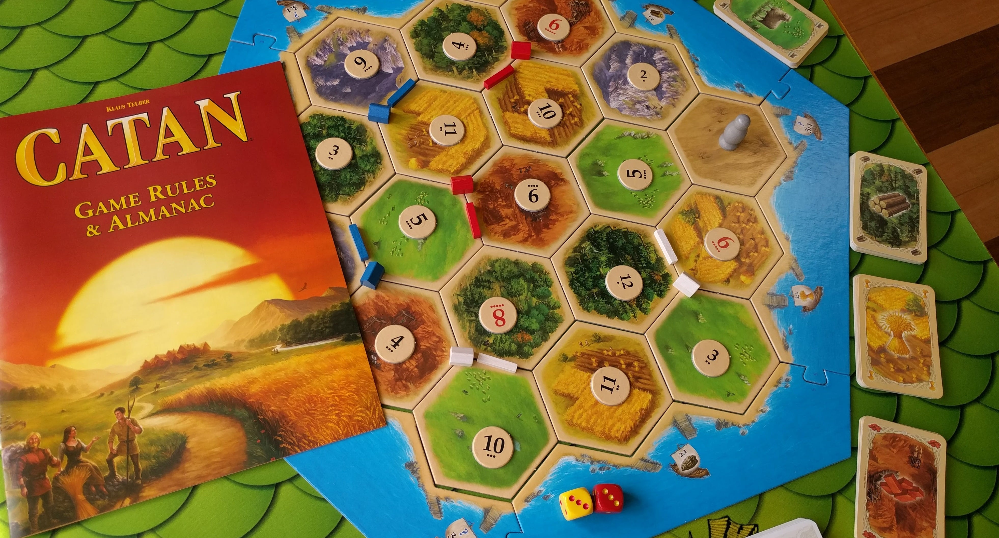
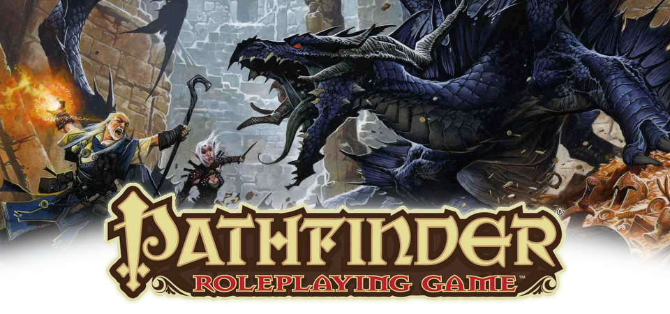

Gaming
As a kid, I found the most joy in reading books late into the night, solving puzzles of all kinds or playing board games. Once I found video games it felt as though many of my joys had been combined into one grand experience, complete with both the stories and the challenges, and tied together with the bow of immersive interaction. My love for video games is what led me to a passion for development, and persists through adulthood. Along the way I also picked up Tabletop role-playing games -- often considered the precursors to videogames -- and found them to be similarly engaging.


